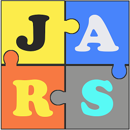

Open Source
One of my biggest projects so far has been the development of an opensource Scheduler.
I hope to create more projects in the future

JaRS - Job and Resource SCheduler
One of the things I came across while creating integration processes with older systems is that there were almost always a piece of the puzzle missing. Making paper-based processes digital sometimes had
a requirement
to send information to mobile devices, but with old systems lacking a way of scheduling jobs and communicating with mobile devices something had to be done...